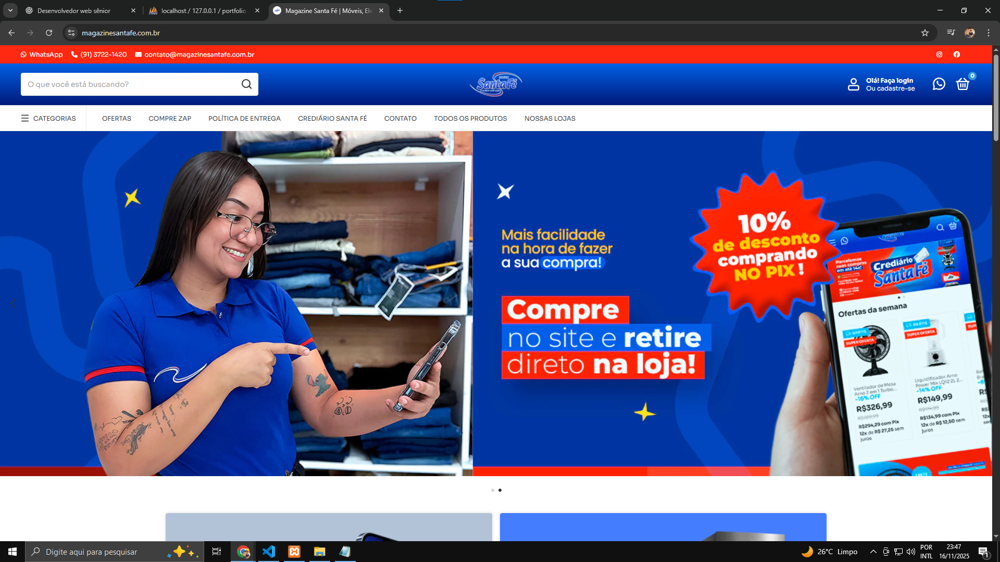

Case 1 — Site de vendas para Magazine Santa Fé
Cliente: Grupo Santa Fé
Tecnologias: Site criado utilizando a plataforma NuvemShop (incluído aqui como exemplo de projeto real no portfólio).
Descrição: Desenvolvimento de um site de vendas moderno, responsivo e focado em conversão, com páginas informativas e integração com catálogo de produtos.
Resultados: Aumento na geração de leads e melhor apresentação digital da marca.